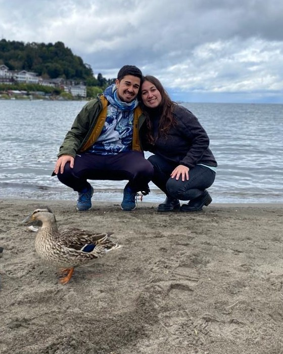

Llenas tus días para no sentir.
Haces y haces. Mientras estás en movimiento, todo parece sostenerse. Pero cuando te detienes, el dolor vuelve a aparecer.
PSICOTERAPIA ESPECIALIZADA EN DUELO
Un espacio para trabajar tu duelo a tu ritmo, para que la pérdida forme parte de tu historia sin ocuparlo todo.
Agendar evaluación sin costoQUIZÁS TE RECONOZCAS EN ESTO
Cumples con tus responsabilidades e intentas retomar tu vida. Pero en la noche, o en cualquier momento de pausa, aparece lo que durante el día no alcanzas a sentir.
Haces y haces. Mientras estás en movimiento, todo parece sostenerse. Pero cuando te detienes, el dolor vuelve a aparecer.
Una fecha, una canción, una fotografía o un lugar pueden despertar emociones intensas, aunque entiendas perfectamente lo que pasó.
Una parte de ti quiere volver a vivir, mientras otra teme que hacerlo signifique dejar atrás a quien ya no está.
Si te reconoces en alguna de estas experiencias, no significa que estés haciendo mal tu duelo. Cada pérdida y cada vínculo son únicos; a veces necesitamos encontrar otra manera de trabajar con lo que estamos viviendo.
LO QUE TE PASA TIENE SENTIDO
Después de una pérdida importante, el cerebro y el cuerpo siguen esperando lo que ya no está. Por eso el dolor llega en olas, muchas veces sin aviso, y aparece con más fuerza cuando bajas el ritmo.
Hay un dolor que no se arregla: se acompaña. Y hay cosas que lo hacen más pesado, como no dormir, culparte o sentir que otros te apuran, que sí podemos aliviar.
EN EL DUELO TAMBIÉN ES COMÚN
Si te reconoces en esto, podemos conversarlo con calma.
Agendar evaluación sin costoCÓMO TRABAJAMOS
A veces entiendes lo que pasó y, aun así, sigues sintiendo culpa, angustia o una reacción intensa ante ciertos recuerdos. Por eso trabajamos con lo que piensas, sientes y vives en el cuerpo, a partir de tres claves:
Reconocemos tus señales emocionales y corporales para que puedas sentir lo que sientes sin que te desborde.
No hay dos duelos iguales. No necesitas hablar de todo desde el inicio: tú decides cuánto acercarte y ajustamos el ritmo a lo que puedes sostener.
Un espacio sin juicios para acercarnos con cuidado a lo que sigue doliendo, como la culpa o ciertos recuerdos, sin forzarte a revivirlo todo.
EL PROCESO, PASO A PASO
Conversamos sobre tu pérdida, cómo la estás viviendo, cómo están tu cuerpo, tu sueño y tus apoyos, y qué necesitas primero.
Antes de ir a lo más difícil, desarrollamos herramientas para estabilizarte y sentir que recuperas algo de control sobre tu duelo, también entre sesiones.
De a poco y con cuidado, trabajamos con las sensaciones, las emociones y los momentos con mucha carga emocional.
Buscamos que puedas volver a disfrutar sin olvidar, y que la pérdida forme parte de tu historia sin ocuparlo todo.
No son etapas fijas: cada proceso es distinto y volvemos a cada momento cuando hace falta. Las sesiones son online, individuales y de 60 minutos, y no existe una duración fija: revisamos juntos los objetivos y cómo avanza el proceso.
TESTIMONIOS
“Pensé que me iba a quedar con esa carga emocional toda la vida. Con cada sesión me sentía escuchada, y esa carga que sentía en los hombros empezó a pasar. Hoy se recuerda con mucho más amor que pena. La pena siempre va a estar, pero se logra conversar de ellos sin tanta pena. Y entendí que tenía derecho a sentir pena, a llorar si quería.”
“Fui logrando recordar esos momentos sin la misma angustia. Hoy lo recuerdo a diario con el mismo amor y siento su compañía, sin la angustia que antes no me dejaba estar tranquila.”
“Benjamín me dio la confianza y la tranquilidad para encontrarme conmigo misma. Aprendí a comunicar mis emociones. Ahora soy más humana, más empática. Valoro más las cosas.”
Los testimonios reflejan experiencias personales; cada proceso terapéutico es único.
¿Quieres ver si este proceso tiene sentido para ti?
Agendar evaluación sin costoQUIÉN SOY
He vivido pérdidas importantes y también he acompañado a mi pareja en la pérdida de seres queridos que han sido profundamente significativos en su vida. Estas experiencias me acercaron a una realidad que hoy también veo en mi trabajo: el duelo puede transformar nuestra vida cotidiana, nuestras relaciones y la manera en que nos sentimos con nosotros mismos.
A lo largo de mi trabajo clínico, he acompañado a cientos de personas en sus procesos de duelo. Eso me ha permitido comprender algo fundamental: no hay dos duelos iguales. Cada pérdida tiene una historia, cada vínculo es único y cada persona necesita encontrar su propia manera de integrar lo vivido.

MI FORMACIÓN Y MI FORMA DE ACOMPAÑARTE
Soy Benjamín Olave, psicólogo clínico especializado en duelo y trauma. Me he formado con referentes internacionales en estas áreas, profundizando especialmente en cómo las experiencias difíciles afectan nuestras emociones, nuestro cuerpo y nuestro sistema nervioso.
Mi manera de trabajar combina EMDR con enfoque somático, IFS (Sistema de Familia Interna) y terapia centrada en la compasión, adaptando el proceso a tu historia, tus necesidades y tus tiempos.
Mi objetivo es acompañarte a recuperar seguridad y a que la pérdida forme parte de tu historia sin ocuparlo todo, sin sentir que seguir viviendo significa dejar atrás lo que amaste.
¿TIENE SENTIDO PARA TI COMENZAR ESTE PROCESO?
No necesitas tener todas las respuestas ni saber exactamente cómo empezar.
PUEDE SER PARA TI SI...
QUIZÁ NO SEA EL MOMENTO SI...
EL PRIMER PASO
La evaluación inicial es un encuentro online de 60 minutos para conocernos, entender qué te trae y ver juntos si tiene sentido comenzar un proceso.
Lo que compartas en la evaluación y en las sesiones es confidencial.
Agendar evaluación sin costoVALORES DE LAS SESIONES
PREGUNTAS FRECUENTES
Información práctica sobre la evaluación, el proceso y los valores.
No. Solo compartes lo que sientas que puedes compartir. Querer empezar un proceso no significa tener que hablar de todo desde el inicio. Vamos a tu ritmo.
No existe una duración igual para todas las personas. Depende de tu historia, de lo que necesitas trabajar y de cómo evoluciona el proceso. Vamos revisando los objetivos y las necesidades en conjunto.
Son sesiones individuales de psicoterapia online de 60 minutos. Es importante que puedas conectarte desde un lugar privado y relativamente tranquilo. La atención se adapta a lo que estás viviendo y a los objetivos que vamos definiendo.
Es una instancia para conocernos, entender qué te trae a consultar y valorar si el proceso puede ser adecuado para ti. No sustituye una sesión de terapia ni busca profundizar en experiencias dolorosas antes de definir el trabajo.
No. La evaluación sirve para conocernos y ver si este espacio tiene sentido para ti. Al final, tú decides si quieres comenzar.
Es completamente normal. No hay una forma correcta de llegar ni algo que tengas que preparar. Vamos a tu ritmo y te acompaño a ordenar lo que vaya apareciendo.
Sí. Lo que compartas en sesión está protegido por el secreto profesional. Las únicas excepciones son las que establece la ley, por ejemplo, si existe un riesgo grave para tu vida o la de otra persona.
Porque algunas experiencias difíciles pueden seguir activando reacciones emocionales y corporales, aunque racionalmente comprendamos lo que ocurrió. El proceso busca trabajar con esas respuestas de manera gradual y respetuosa.
Las sesiones individuales duran 60 minutos y tienen un valor de $50.000 CLP. Si tienes Isapre, el reembolso depende de las condiciones de tu plan. Si estás en Fonasa, existe un valor diferenciado de $40.000 CLP.
UN PRIMER PASO
No tienes que resolver todo hoy ni saber exactamente cómo seguir. Podemos comenzar por comprender lo que estás viviendo y explorar qué necesitas para avanzar.